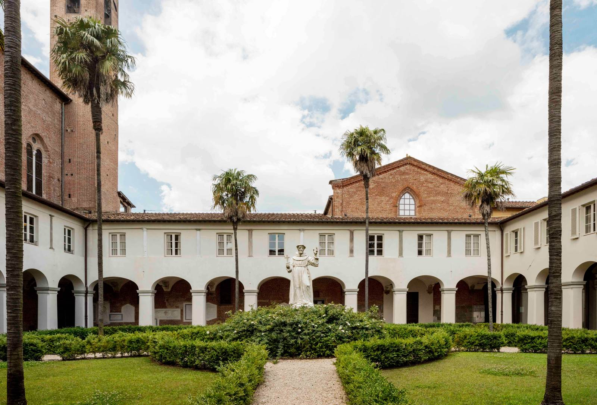
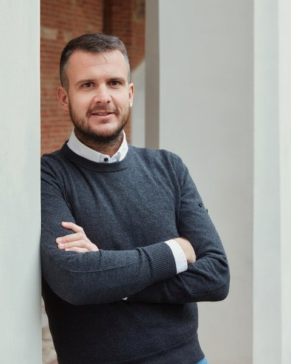
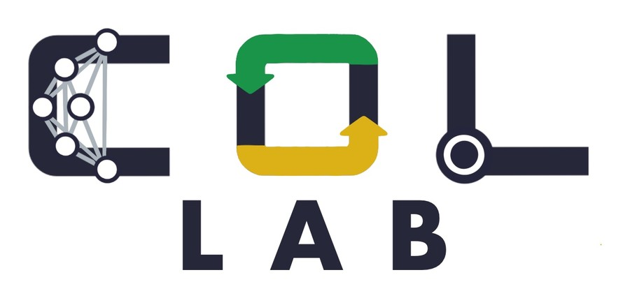

Professor

DYSCODynamical Systems, Control, and Optimization
About
DYSCO develops methods for the design of multivariable control systems. Research focuses on model predictive control, with new algorithms for real-time convex embedded optimization, system identification and machine learning.
Besides the algorithms and their theoretical properties, the results are applied in the automotive and aerospace industries, energy, process control and financial engineering.
DYSCO is part of the research area in Computer Science and Engineering at the IMT School for Advanced Studies Lucca, Italy. DYSCO is in charge of the Learning and Control PhD track of IMT Lucca. Its members work together in COLLab, the experimental laboratory of the unit.
People
Faculty
Professor
Mario Zanon
Associate Professor
Mario E. Villanueva

Associate Professor
Filippo Fabiani
Assistant Professor
Puya Latafat
Postdocs
- Adeyemi Adeoye
- Sampath Kumar Mulagaleti
- Renzi Wang
PhD Students
- Shokhjakhon Abdufattokhov
- Filippo Badalamenti
- Chiara Cavalagli
- Emmanouil Dimou
- Matteo Facchino
- Yuxuan Guo
- Hasna El Hasnaouy
- Mikalai Korbit
- Stefano Menchetti
- Francesco Pillitteri
- Hamid Salekinia
- Saugat Shahi
- Haoming Shen
- Kui Xie
- Chenrui Zhang
Research
Research topics
Model Predictive Control (MPC)
Model Predictive Control (MPC) is widely used in industry for real-time control of large multivariable processes. At each step, the control action is chosen by solving an optimal control problem online that minimizes a performance criterion over a future horizon, subject to constraints on process variables.
The unit investigates stochastic MPC for constrained linear systems, nonlinear MPC, decentralized and hierarchical MPC for spatially-distributed large-scale systems, MPC of networked systems based on wireless sensor feedback, and explicit MPC and multiparametric programming for linear, hybrid, uncertain, and quantized systems.
Numerical Optimization
Numerical algorithms for convex and nonconvex optimization problems that arise in embedded MPC, machine learning, engineering and economics. Topics include global and robust optimization and numerical methods for optimal control.
Machine Learning and System Identification
We develop new algorithms to learn dynamical models from data, with emphasis on linear parameter varying, piecewise affine, and general nonlinear models, and to learn control policies from data (reinforcement learning).
Applications
Automotive
Autonomous driving, traction control, direct-injection engine control, semi-active suspensions, electromagnetic actuators, adaptive cruise control, robotized gearboxes, air-to-fuel ratio, active steering, idle speed control, power management and thermal management in hybrid electrical vehicles.
Aerospace
Satellite attitude control, control of sloshing, guidance, navigation and control of unmanned aerial vehicles (including formation flying and rendezvous), control of powered descent.
Industrial Process
Control of gas turbines, gas supply systems, flatness in cold tandem rolling, solar plants, cement mill scheduling.
Energy and Finance
Optimal bidding on energy markets, optimal power dispatch in smart grids, management of water distribution networks and sewer networks, dynamic hedging of financial options, optimal issuance of public debt securities.
Publications
Publications are listed on the Google Scholar profile of each faculty member.
Collaborations
The unit carries out applied research projects with industrial partners and collaborates scientifically with universities.
Spinoff company
Founded in 2011 as the first spinoff of the IMT School for Advanced Studies Lucca, ODYS is an independent company specialized in providing consultancy services and software for the development of industrial model predictive control systems.
Software
MATLAB and Python packages for real-time model predictive control, numerical optimization, and system identification.
The MathWorks
Model Predictive Control Toolbox
Functions, an app, Simulink blocks, and reference examples for developing model predictive control (MPC).
MATLAB / Simulink
Hybrid Toolbox
Model, simulate, and verify hybrid dynamical systems, and generate MPC controllers ready for real-time C-code deployment.
Python / JAX
jax-sysid
Linear and nonlinear system identification of state-space models.
Active Learning
IDEAL
Inverse-Distance based Exploration for Active Learning.
Machine Learning
PARC
Piecewise Affine Regression and Classification.
Global Optimization
GLIS
Global and preference-based optimization of expensive black-box functions.
MATLAB
Fitting Jump Models
Algorithms for fitting jump models to a training data set, and for inferring outputs and mode jumps from data.
Convex Optimization
ForBES
A MATLAB solver for nonsmooth convex optimization problems.
European Space Agency
MPCTOOL / MPCSofT
Industrial and aerospace control tools developed for European Space Agency missions and real-time operations.
COLLab
Control Optimization and Learning Laboratory
About the lab
COLLab is the laboratory of DYSCO, where all the members of the unit converge. It adds in-house experiments to the largely theoretical work of the unit, so that control and learning methods can be designed, tested and validated on real platforms.
Equipment
- Two robotic arms, acquired within the ERC Advanced Grant COMPACT, installed in the San Francesco complex.
Planned
Small autonomous vehicles and miniature aerial vehicles as test platforms, and high-performance computing workstations.

Teaching
PhD courses offered by the unit at IMT Lucca. See also the page of the track Learning and Control.
- Introduction to Machine Learning
- Numerical Optimization
- Model Predictive Control
- Numerical Methods for Optimal Control
- Reinforcement Learning
- Polyhedra I
- Polyhedra II
- Algorithmic Game Theory
- Introduction to Nonsmooth Optimization
- Identification, Analysis, and Control of Dynamical Systems
Join us
PhD and postdoctoral positions at IMT Lucca.
PhD
DYSCO is in charge of the Learning and Control track of the PhD program in Systems Science at IMT Lucca. The track covers machine learning and the control of dynamical systems based on numerical optimization.
PhD positions are advertised in the yearly call of the School. See the call for applications and deadlines.
Postdocs and visitors
For postdoctoral positions or visits, write to the faculty member closest to your interests (see the People page) or to dysco@imtlucca.it.
Contact
Address
DYSCO, Dynamical Systems, Control, and Optimization
IMT School for Advanced Studies Lucca
Piazza San Francesco, 19
55100 Lucca, Italy
Email and phone
dysco@imtlucca.it
+39 0583 4326600